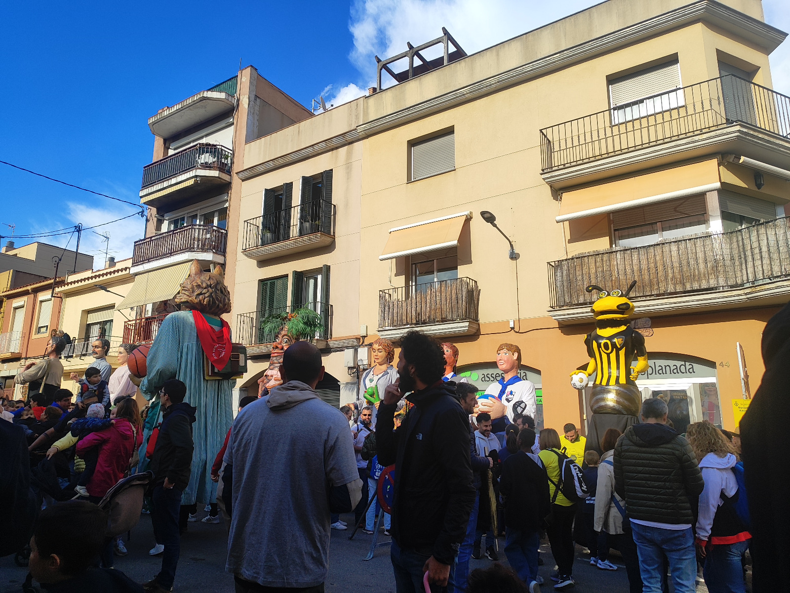

Tots els esdeveniments de Tradicions de Mataró al teu abast
A Tradicions de Mataró t'oferim tota la informació sobre les festes, celebracions i activitats culturals que no et pots perdre. Consulta el nostre calendari i afegeix els esdeveniments al teu diari.

Fes clic a qualsevol acte per veure'n els detalls i afegir-lo al teu calendari.